Разбор аккаунта @sya_life_ по данным за 11 месяцев и предложение по первому шагу работы.
Прежде чем говорить о проблемах, зафиксируем то, что работает. Это не комплимент, это выводы из цифр.
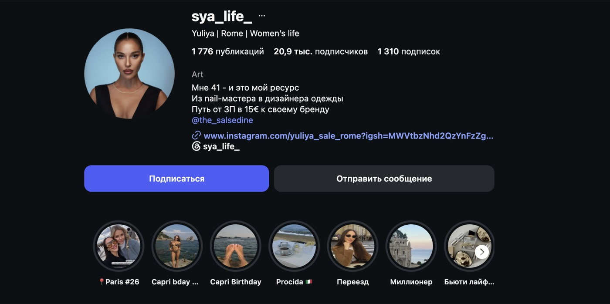
В шапке заявлено сильное: возраст как ресурс, путь из nail-мастера в дизайнера, заработок с 15 €. Три строки, в которых уже лежит позиционирование — но дальше по блогу оно почти не разворачивается.
Темп в 24 рилса в месяц Вы держите одиннадцать месяцев подряд без единого провала. Это дисциплина, которой нет у большинства блогов такого размера.
Осенью 2025 года типичный ролик собирал 6–7 тысяч. С апреля 2026 база держится на 16–26 тысячах — четвёртый месяц подряд. Это не разовый всплеск, а новый уровень, примерно вчетверо выше старта.
Вывод простой: Вы умеете снимать и не бросаете. Проблема не в объёме работы и не в дисциплине. Она в том, куда эта работа направлена.
Средний просмотр по блогу — 29 341. Медианный — 6 898. Разрыв в 4,3 раза. Это значит, что типичный Ваш ролик собирает около семи тысяч, а всю статистику делают несколько случайных попаданий.
Цифра, которую видно в отчётах. Её раздувают несколько роликов.
Реальный результат обычного ролика. Ровно половина роликов ниже этой цифры.
Десять роликов из 264 дали две трети всех просмотров блога. Оставшиеся 254 — треть. Один ролик про содержанок весит больше, чем 254 ролика вместе взятые.
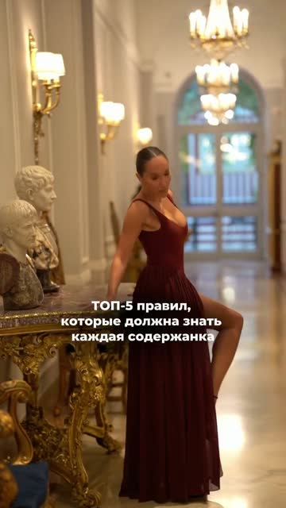
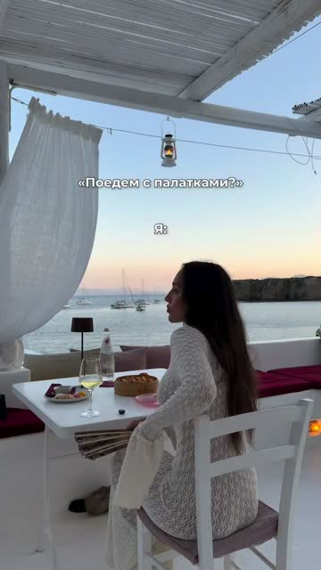
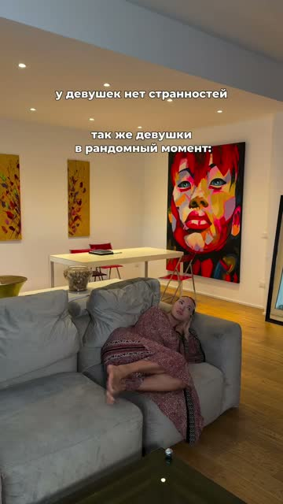
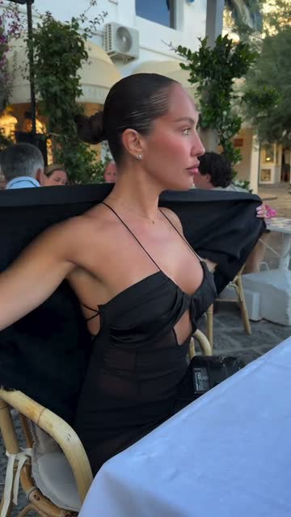
Почти везде — Вы в кадре и говорите. Ни одного лукбука, ни одной раскладки вещей.
Декабрь 2025 и май 2026 вместе дали 62% годового результата. Остальные девять месяцев — 38%.
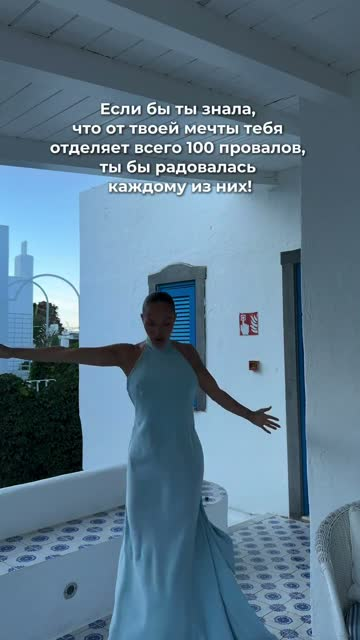
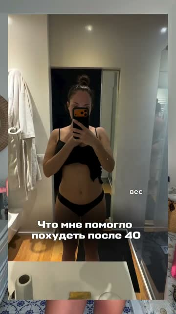
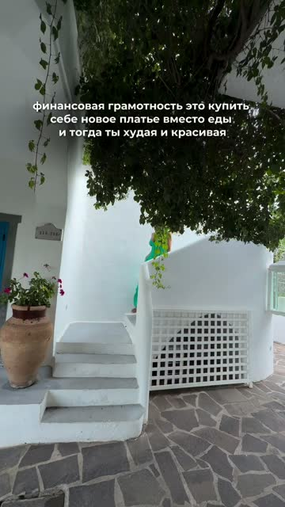
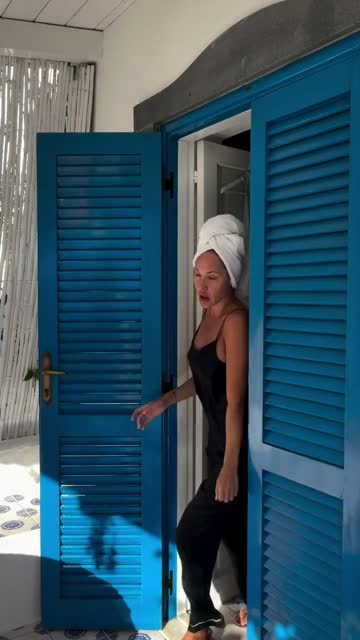
Двенадцать дней подряд, ровный визуал, одинаковое качество съёмки. Одиннадцать роликов в коридоре от 2 до 13 тысяч и один на 468 тысяч. Разброс в двести раз при одинаковых усилиях.
Так работает любой блог без стратегии: Вы снимаете много, что-то случайно попадает, охваты подскакивают, потом падают обратно. Управлять этим нельзя — можно только продолжать снимать и надеяться.
«В течение практически двух лет у меня не было вообще движения»
Из разговора 28 июляЯ разобрал все 264 ролика по темам и сравнил не средние, а медианы: среднее обманывает, его задирают выбросы. Вот что получилось.
Медиана — результат типичного ролика в теме. В скобках — сколько роликов этой темы в выборке.
Образы, лукбуки и показ вещей — последнее место из девяти тем. 28 роликов, медиана 5 543. Ваш последний лукбук от 27 июля с перечнем брендов собрал 2 192 просмотра — худший результат за всю выборку.
Юмор про содержанок. Вы в кадре и говорите, подпись — один смайлик. Ни одной вещи, ни одного бренда. Треть всех просмотров блога за одиннадцать месяцев.
Лукбук с перечнем брендов в подписи: платье, купальник, очки, сумка. Худший результат за всю выборку из 264 роликов.
Разница — в 1 094 раза. Съёмка, свет и качество картинки в обоих случаях одинаковые.
А работает прямая речь: деньги и доход, Италия и переезд, отношения. То есть Вы сами в кадре, говорящая камера, личный опыт.
«Вот тот формат, который мне комфортен, он не набирает»
Из разговора 28 июляВы это чувствовали и без цифр. Цифры просто подтверждают на 100%.
Вы хотите, чтобы платья покупали не потому что Вы их выложили, а потому что людям близка Ваша эстетика и Ваши ценности. Но эстетику Вы сейчас показываете ровно тем форматом, который аудитория не смотрит.
Получается замкнутый круг. Ролики, которые продают вещи, набирают меньше всех. Ролики, которые набирают, про вещи не говорят. Между блогом и брендом нет моста.
Формат, который приносит Вам весь охват, о Вашем бренде молчит.
При этом в ленте бренд отмечен 118 раз. Просто вся эта работа осталась в постах, которые уже почти никто не видит, и не перешла в рилсы.
2018–2019 — 96 упоминаний за два года, период белорусского ателье. 2023–2024 — ни одного. 2025–2026 — по два в год.
Причём аккаунтов у дела было два: помимо @the_salsedine в подписях 2016–2020 годов 42 раза отмечено @sya_atelier — это ателье, и в актуальных до сих пор висят отзывы клиенток с этой отметкой. После 2020 года — тишина по обоим.
Это важный факт, который меняет всю картину: бренд существует с 2016 года. Вы не запускаетесь с нуля — Вы перезапускаете дело, которое уже работало и приносило результат.
И работало оно тогда, когда блог был на пике вовлечения: медиана лайков в 2018 году — 331, выше сегодняшней.
13 лет аккаунта. Пик — 2018 год, ровно период работающего ателье.
ДНК бренда задумывался как шёлк и элегантность. Вы показали пробное леопардовое короткое платье — и 50 человек написали «хочу».
«Запрос есть другой, который вот быстрый»
Ваш собственный вывод, 28 июляЭто не значит, что задуманный ДНК бренда неправильный. Это значит, что между тем, что Вы хотите производить, и тем, что аудитория готова купить сегодня, есть зазор — и его надо не угадывать, а разложить.
«Я вижу, что от „хочу“ до „куплю“ — это просто пропасть огромная. Из ста человек, которые хотят, купит один»
Из разговора 28 июляЭта пропасть — не свойство аудитории. Это отсутствие пути от интереса к покупке: человек посмотрел ролик, захотел — и дальше ему некуда идти.
Около 5%. Ваши подписчики почти не видят Вас между рилсами.
При этом в актуальных лежит 1 155 единиц контента в 23 линиях. Я расшифровал 672 из них и нашёл там три готовые сюжетные линии.
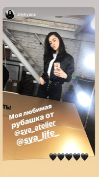
Ателье изнутри и отзывы клиенток: платья, рубашки, благодарности с отметкой ателье. Фактуры работающего бизнеса в рилсах нет вообще.
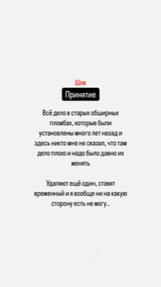
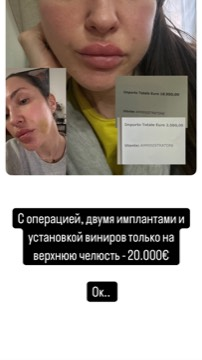
История с началом, серединой и ценой вопроса: пломбы полетели от стресса после переезда, операция, импланты и виниры на 20 000 €. В рилсы попал один эпизод — и дал 500 тысяч просмотров.
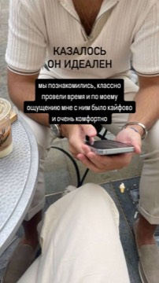
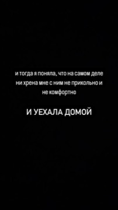
Закрытый сайт знакомств для состоятельных и Ваши свидания с него: «казалось, он идеален» — и «уехала домой». Смежная тема с роликом на 2,4 млн.
Две из трёх линий напрямую связаны с самыми успешными роликами блога. Материал уже снят и лежит — он просто не превращён в контент, который видят.
Телеграм-канала нет, контакты не собираются. Вся аудитория держится на одном Instagram, к которому у Вас нет доступа как к активу: Вы не можете написать этим людям, когда выходит новая коллекция.
При 20 тысячах это неприятно. При 100 тысячах — это уже упущенные деньги каждый месяц.
| Что происходит | Цифра |
|---|---|
| Формат, продающий вещи, — худший из девяти тем | 5 543 |
| Бренд упомянут в рилсах | 2 из 264 |
| Рост держится на случайных попаданиях | 10 роликов = 67% |
| Сторис почти не смотрят | ≈5% |
| Аудитория не собрана в свою базу | 0 |
Ни один из этих узлов не развязывается тем, что Вы будете снимать больше или чаще. Вы уже снимаете 24 ролика в месяц — больше некуда.
У Вас за плечами два подхода к продвижению: работа с подрядчиком и обучение. Оба закончились одинаково — Вы вышли из них с ощущением, что это не Ваше.
«Мне было максимально сложно, я не умею так включаться быстро, резко»
О работе с подрядчиком«Я попробовала, но мне как-то это не близко»
Об обученииОбщее у обоих заходов одно: они начинались с «снимай вот так». Ни один не начинался с вопроса, кто Вы для этой аудитории и почему у Вас должны купить платье.
Поэтому любая механика ощущалась чужой. Не потому что плохая, а потому что надета на неразобранного человека.
«Я не умею себя упаковывать»
Из разговора 28 июляВы перечисляете свой путь — переезд в другую страну, учёба заново, ателье с нуля, возвращение к делу через пять лет — и добавляете: «ну, я это всё не понимаю». То есть не видите в собственной биографии материала. А это и есть материал, причём тот самый, на который Ваша аудитория реагирует лучше всего.
Вы сказали, что главным результатом полугода будет понятная стратегия: кто Ваша аудитория, как с ней общаться и как расти. Предлагаю получить это на входе, а не через полгода — и на этом проверить, как нам работается вместе.
Я присылаю блоки вопросов, Вы отвечаете голосовыми, когда удобно. Достаём из Вашей биографии то, что Вы сами перестали замечать: Беларусь, ателье, переезд, учёба, возвращение к делу.
Кто Вы для аудитории одной фразой и чем отличаетесь от сотни женских блогов из Италии. Через силу и путь, а не через жертвенность.
Кто эти женщины, что их держит, на каком языке с ними говорить. Не догадки, а разбор по реакциям на 264 ролика и комментариям.
Как платья продаются через историю, а не через лукбук. Схема пути от ролика до покупки — то самое место, где сейчас пропасть между «хочу» и «куплю».
Три-пять форматов, которые несут позиционирование и работают на бренд. С опорой на то, что у Вас уже выстрелило, а не на чужие тренды.
Как включить обратно 1 155 файлов, которые уже сняты, и что с базой подписчиков — где и как её собирать.
Всё, что мы разберём, остаётся у Вас в виде рабочих материалов. Не пересказ Ваших ответов, а документы, по которым можно работать самой или с любым исполнителем.
Разбор блога, который Вы уже читаете выше, — это часть того, что войдёт в работу. Только глубже и по каждому направлению.
Я уже разобрал Ваш аккаунт целиком — рилсы, ленту, актуальные, статистику. На этом этапе добираю то, чего нет в открытых данных.
Я присылаю вопросы блоками — про путь, про дело, про то, что Вы сами считаете неважным. Вы наговариваете ответы голосовыми, когда Вам удобно: с утра, в дороге, между делами. Никаких назначенных созвонов, под которые надо подстраиваться и собираться.
Расшифровываю все Ваши голосовые и свожу их с данными блога в позиционирование, портрет аудитории и форматы. Здесь Ваше участие не нужно.
Встреча, где я разбираю всё по документам и отвечаю на вопросы. Дальше вношу правки — материалы должны звучать как Вы, а не как я.
Формат с голосовыми выбран сознательно. Вы говорили, что тяжело даётся включаться быстро и резко — здесь этого и не требуется: отвечаете в своём темпе, возвращаетесь и дополняете, если что-то вспомнилось позже. По опыту так получается честнее, чем на созвоне, где человек собран и говорит «как надо».
Съёмки на этом этапе не нужны. Живая встреча одна — на защите готовых материалов.
Вы просили тестовый формат, чтобы проверить контакт в работе, — это он. Отдельная законченная работа, после которой Вы решаете, идти дальше или нет.
Никаких обязательств продолжать. Все материалы остаются у Вас в любом случае: даже если мы не продолжим, у Вас на руках позиционирование, портрет аудитории и форматы, с которыми можно работать дальше самой.
Две-три недели работы. Все документы остаются у Вас без условий.
Дальнейший формат — ведение блога или консалтинг — обсуждаем после, когда будет понятно, куда идём и как нам работается вместе. Загонять Вас в полугодовой контракт на старте я не вижу смысла: Вы это уже проходили дважды.
Чтобы не было неясности, как всё устроено технически — по шагам, от оплаты до готовых материалов.
Вы вносите оплату. Работа считается начатой с этого момента — никаких дополнительных согласований и подписаний не требуется.
Создаю отдельный чат в Telegram — там идёт вся работа: вопросы, Ваши голосовые, черновики, любые уточнения по ходу. Всё в одном месте, ничего не теряется в переписке.
В день оплатыПрисылаю в чат первый блок — про Ваш путь, Беларусь, ателье, переезд. Вы отвечаете голосовыми, когда удобно. Дедлайнов по часам нет, но чем плотнее отвечаете, тем быстрее двигаемся.
Следующий деньСлушаю ответы и присылаю новые вопросы — уже прицельно туда, где нашлось важное. Обычно три-четыре блока. Здесь же задаю уточняющие, если что-то прозвучало вскользь.
Первая неделяРасшифровываю все голосовые, свожу их с разбором блога и собираю документы: позиционирование, портрет аудитории, связку с брендом, форматы. Ваше участие на этом этапе не нужно.
Вторая неделяСозваниваемся, я разбираю всё по документам и отвечаю на вопросы. Вы говорите, где узнаёте себя, а где нет.
Вношу правки и отдаю финальные материалы. Дальше Вы решаете, продолжаем ли мы работу — или Вы работаете по ним самостоятельно.
Если Вас всё устраивает — можем просто начинать: на этой неделе присылаю первый блок вопросов.